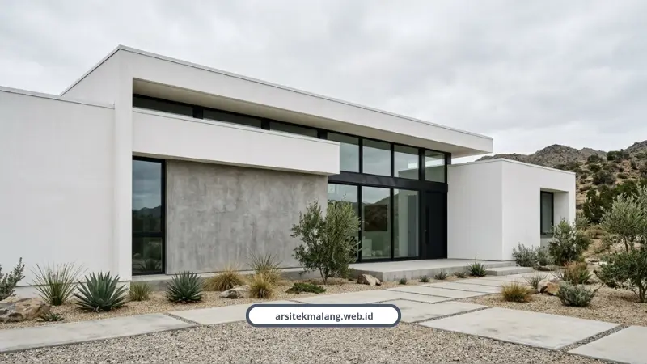

Ringkasan Inti
- Fasad rumah di Malang menuntut adaptasi iklim lokal berkelembapan tinggi agar tidak cepat retak rambut, kusam, atau ditumbuhi jamur.
- 10 inspirasi fasad meliputi aksen kayu Bengkirai/Merbau, baja industrial ekspos, kanopi kantilever lebar, batu alam ber-coating, hingga WPC tahan cuaca.
- Kunci keawetan aksen kayu terletak pada pembatasan proporsi 15–25% serta adanya celah ekspansi 3–5 mm untuk sirkulasi udara.
- Estimasi biaya konstruksi fasad dan struktur rumah minimalis 2 lantai di Malang berada pada rentang Rp3,5 juta sampai Rp5,5 juta per meter persegi.
- Renovasi fasad tanpa merombak struktur utama atau menambah luasan tidak memerlukan perizinan PBG baru sehingga lebih hemat dan cepat.
Daftar Isi Artikel
Fasad rumah minimalis yang ideal di Malang wajib adaptif terhadap curah hujan tinggi dan radiasi UV, bukan sekadar ikut tren. Berikut 10 inspirasi tampak depan yang sudah kami rancang, dari aksen kayu sampai renovasi fasad rumah lama.
Kenapa Fasad Rumah di Malang Nggak Bisa Asal Ikut Tren Pinterest?
Fasad rumah yang cantik di foto belum tentu tahan menghadapi udara dingin lembap dan hujan lebat khas dataran tinggi Malang. Banyak rumah yang baru 2 tahun sudah kusam, retak rambut, atau berlumut karena materialnya tidak disesuaikan iklim lokal.
Makanya, tiap fasad rumah minimalis yang kami rancang selalu mempertimbangkan detail teknis, bukan cuma tampilan visual di render 3D.
Inspirasi Fasad Rumah Minimalis Modern yang Sudah Kami Rancang
Berikut sepuluh gaya fasad yang paling sering kami eksekusi untuk klien di Malang Raya.
1Fasad Tropis Minimalis Aksen Kayu Bengkirai atau Merbau
Menggabungkan dinding acian netral dengan panel atau kisi-kisi kayu alami di area pintu masuk atau kanopi carport. Kayu Bengkirai dan Merbau dipilih karena tahan kelembapan udara Malang, dengan proporsi ideal 15 sampai 25 persen dari total luas fasad.
2Fasad Vertikal Minimalis Modern 2 Lantai Hemat Lahan
Rancangan fasad tegak lurus yang mengoptimalkan lahan terbatas di kawasan perkotaan. Memadukan bidang masif geometris, kisi-kisi penapis cahaya, dan sistem ventilasi alami silang.
3Fasad Gaya Industrial Mewah dengan Baja, Beton Ekspos, dan Kaca
Karakter tegas dan maskulin lewat ekspos kerangka baja gelap, dinding beton ekspos poles halus, dan bidang kaca besar. Kami pakai profil baja H-Beam atau I-Beam dan kaca tempered minimal 10 mm.
4Fasad Modern Tropis dengan Teritisan Lebar dan Atap Miring
Desain yang sangat responsif terhadap iklim lokal untuk menangkal tampias hujan deras. Kanopi kantilever atau teritisan atap lebar mencegah air hujan merembes langsung ke dinding depan.
5Fasad Minimalis Aksen Batu Alam dengan Lapis Coating Anti-Jamur
Memadukan cat dinding monokromatik dengan aksen batu candi hitam khas Jawa Timur. Batu alam diberi lapisan coating khusus anti air agar fasad bebas noda jamur di tengah kelembapan Malang.

6Fasad Minimalis Bukaan Kaca Lebar dan Clerestory Window
Memaksimalkan cahaya alami dan sirkulasi udara pasif tanpa mengorbankan privasi. Jendela atas atau clerestory dan pintu kaca geser terhubung sampai ke inner courtyard.
7Fasad Kayu Komposit WPC yang Anti Lapuk dan Minim Perawatan
Alternatif modern berbahan campuran serbuk kayu dan polimer daur ulang untuk tampilan serat kayu alami tanpa pusing perawatan tahunan. Tahan terhadap penyusutan akibat cuaca pegunungan Malang.
8Fasad Geometris Monokromatik: Beton, Dinding Putih, Kusen Hitam
Mengusung prinsip less is more dengan garis geometris tegas, acian halus, dan kombinasi warna putih, abu-abu semen, serta frame hitam. Ornamen tempelan rumit dipangkas demi efisiensi perawatan jangka panjang.
9Modernisasi Fasad Renovasi Tanpa Merobohkan Struktur Utama
Solusi mengubah tampak depan rumah lama jadi minimalis tropis modern secara efisien. Kami tambahkan aksen kisi-kisi, suntik struktur dak beton, dan kanopi tersembunyi tanpa membongkar pondasi utama.
10Fasad Compact Minimalis untuk Rumah Tipe 45 atau 1 Lantai
Tampilan depan bersih dan fungsional yang khusus dirancang untuk hunian skala compact. Proporsi jendela depan, carport, dan aksen pencahayaan diatur supaya rumah terlihat lebih lapang dan terang.
Tips dari Arsitek Sebelum Memutuskan Gaya Fasad Rumah
Jangan cuma terpukau render 3D di jam golden hour, karena itu bukan gambaran kondisi rumah sehari-hari. Muhammad Musyaffa dari tim riset arsitektur kami punya saran konkret soal ini.
"Mintalah dokumentasi foto rumah yang sudah dihuni minimal 1 sampai 2 tahun. Perhatikan apakah fasad bebas dari noda rembesan air, apakah sirkulasi udara di dalam rumah terasa sejuk alami di siang hari, dan bagaimana kondisi material kayu atau batu alamnya menghadapi musim hujan di Malang," jelas Musyaffa.
Untuk pemasangan kayu eksterior, wajib ada celah udara ekspansi minimal 3 sampai 5 mm antar panel dan lapisan bantalan berongga di balik rangka, supaya air hujan tidak terperangkap dan memicu pembusukan. Detail material lengkapnya sudah kami bahas di panduan material eksterior tahan cuaca Malang.
Catatan Arsitek Malang
Orientasi matahari sangat krusial di Malang. Untuk fasad menghadap barat yang menerima panas sore, gunakan kombinasi secondary skin berupa kisi-kisi kayu atau WPC dan teritisan atap selebar minimal 1,2–1,5 meter untuk meminimalkan beban pendinginan ruangan tanpa menggelapkan interior.
Kisaran Biaya untuk Membangun Fasad Rumah Minimalis di Malang
Perkiraan biaya konstruksi rumah minimalis 2 lantai di Malang berkisar antara Rp3,5 juta sampai Rp5,5 juta per meter persegi, tergantung spesifikasi material fasad dan struktur yang dipilih. Detail tata ruang dan efisiensi lahannya bisa dilihat di panduan lengkap desain rumah minimalis Malang kami.
Sepuluh inspirasi di atas cuma titik awal. Setiap fasad tetap harus disesuaikan arah hadap rumah, kondisi lahan, dan bujet yang Anda punya.
Tim kami biasa membantu menerjemahkan referensi fasad seperti ini jadi gambar kerja yang benar-benar bisa dieksekusi di lahan Anda. Cek layanan desain fasad dan renovasi kami di sini untuk mulai konsultasi gratis.
FAQ Seputar Fasad Rumah Minimalis Malang
Apakah Fasad dengan Banyak Kaca Bikin Rumah Panas di Malang?
Tidak, selama posisi bukaan kaca diatur menghindari paparan matahari langsung sore hari dan dipadukan teritisan lebar. Justru suhu Malang yang sejuk membuat bukaan kaca lebar jadi keunggulan, bukan masalah.
Apakah Renovasi Fasad Rumah Lama Perlu Izin PBG Baru?
Kalau renovasi hanya mengubah tampilan luar tanpa mengubah struktur utama atau menambah luas bangunan, umumnya tidak perlu pengajuan PBG baru. Tapi kalau ada perubahan struktur atau penambahan lantai, wajib diurus ulang lewat SIMBG.
Ingin Fasad Rumah Minimalis yang Dirancang Khusus untuk Rumah Anda?
Rencanakan fasad tampak depan impian bersama arsitek berlisensi kami lengkap dengan gambar 3D fotorealistik dan estimasi RAB akurat.

Naura Regyna Putri
Penulis & Tim Riset Arsitektur Maroon Arsitek Malang, spesialis desain fasad tropis modern, pemilihan material tahan cuaca eksterior, dan renovasi tampak depan hunian.